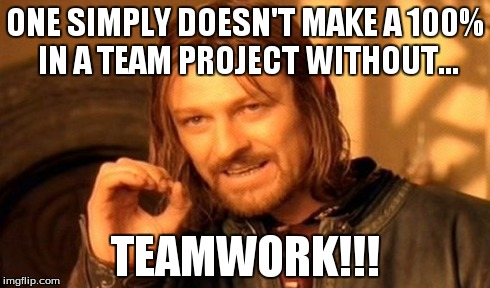
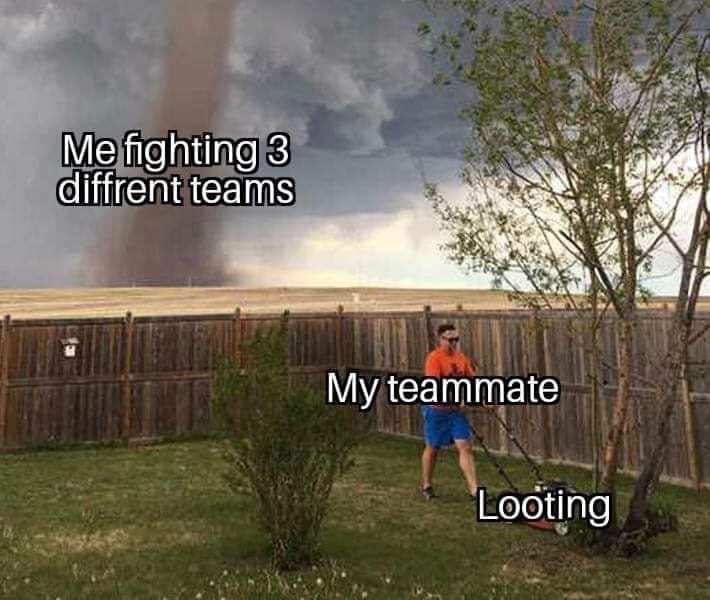
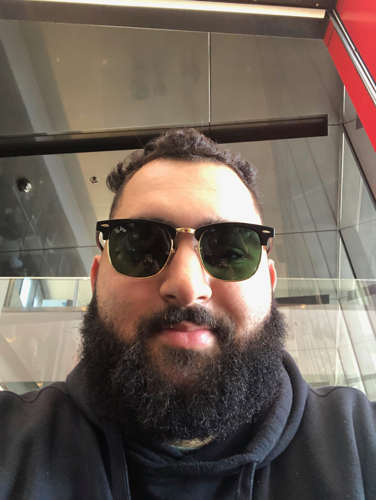
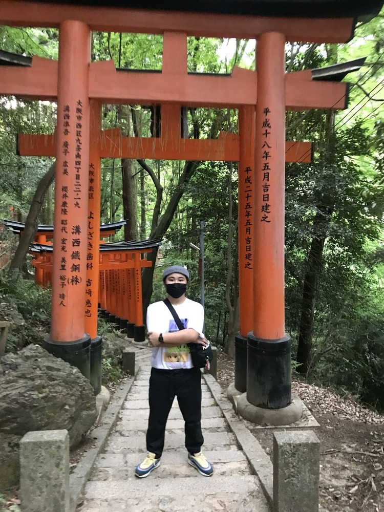
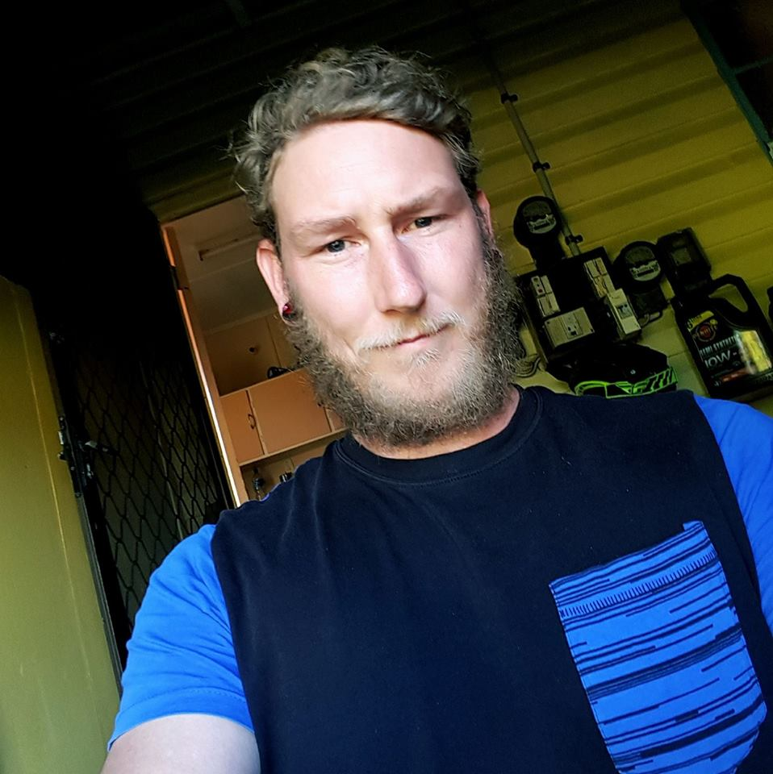
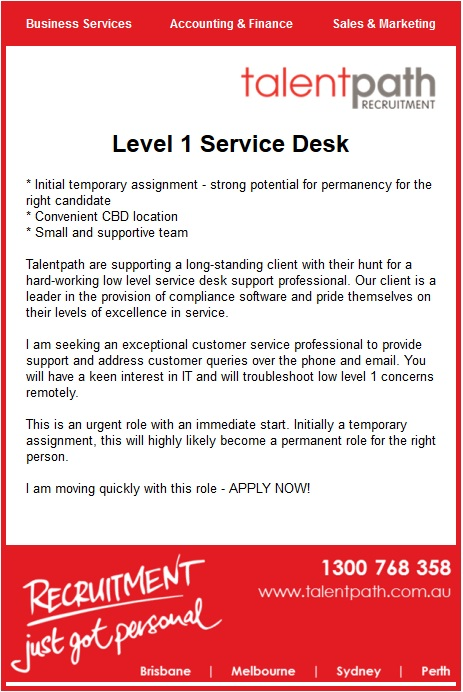

Bois
Team Introduction/Profiles.
John
=======
My name is John Hegarty my student ID number is s3795094 my student email is s3795094@student.rmit.edu.au Born and raised in Australia, with a slight touch of german passed down from my great grand father. Finished Year 12 Back in 2007, Past Jobs Ex Australian Army cook Then discharged and moved onto plumbing which is my current occupation. My favourite sport’s is soccer, I grew up playing Rugby league up until 25 then I made the switch to Football,Most of my spare time is mainly revolved around soccer, currently play for Bayside united in QLD. My biggest sport idol would be Cristiano Ronaldo without a doubt I have been an avid fan since he was 18 playing at Manchester United.
John Azzam
=======
Student Number: S3767649
Student Email: S3767649@student.rmit.edu.au
I am 22 years old and I am from South East Melbourne. I was born in Melbourne; however, my parents are from the middle east, I’m am married to a beautiful Spanish woman. So naturally I speak English, Arabic and Spanish! For work, I am a sales manager of a high performing retail telecommunications environment with Monash University. I started in telecommunications and now I have worked my up. My work is where my interest for I.T. has come from. Which is why I decided to go back to study my first degree. I am a very boring person. Although but my friends say I’m the happiest man alive. Along with, an interesting fact about myself is that I love to Barbeque food (low ‘n slow over minimum 8 hours). I do love dogs more than anything, but I’m having a little trouble convincing my wife to let me buy one.
Andrei Josh Arabit
=======
Melbourne, Australia
s3663902@student.rmit.edu.au
Full-time student | Part-time worker
Enjoys music and gaming
Interesting fact: I drive a manual transmission vehicle :)
Daniel Day
========
Hi Everyone,my name is Daniel Day I am a student at Royal Melbourne Institute of Technology currently studying Bacheor of I.T. online, I'm from Rockhampton in Queensland, Some of my personal interests are Online Gaming, Powerlifting, Surfing and 4x4.
Interest in IT:
I have had an interest in IT for a long time mainly through just general activities on the computer Online Gaming, Video editing and just being online but now my interest is a career in IT so looking online i started to research a little about IT qualifications and decided to start my Bachelors in IT through google and ads on TV, youtube etc. I found RMIT through Open Universities Australia.
Personal Profile: Daniel Day
Results with links to the pages to try the tests for yourself.

The results show that I am an introvert but have a strong personality, I am proactive, and avidly pursue one's interests, I have the courage to express one's views, i can adapt well to see other point of views in a team and can take the lead when necessary, I am a visual learner i like to watch and learn.
Team Personalities (MBTI)| Name | MBTI | Personality Characteristics | Personality Details |
|---|---|---|---|
| John Hegarty | INFP-T | Deep-felt valuing. Quietly caring. Compassionate. Pursues meaning, harmony. Creative. Idealistic. Empathic helpers. Inquisitive. Enjoys ideas, language, writing. Independent. Adaptable. | The Campaigner Role: DiplomatStrategy: Constant Improvement |
| John Azzam | ESFJ-A | Strong Practical Skills, Strong Sense of Duty, Very Loyal, Sensitive and Warm, Good at Connecting with Others | The Caregiver Role: Management expert: defined roles and duties |
| Andrei Josh Arabit | ISTJ-A | An easy-going individual who ensures tasks are achived smoothly. | Role: Sentinal / Strategy: Confident Individualism |
| Name | Test Type | Result | Details |
|---|---|---|---|
| John Hegarty | Big five personality test | Agreeableness 58%, Openness 56%, Extraversion 56%, Conscientiousness 52%, Neuroticism 48% | Big five personality test |
| John Azzan | Myers-Briggs Indicator Test | Consuls - "The Caregiver" | Info |
| Andrei Josh Arabit | Test My Creativity | Info | Info |
Learning Styles Test
| Name | Test Type | Result (Learning Style) | Details |
|---|---|---|---|
| John Hegarty | Education Planner |
|
These results show John is a tacile learner |
| John Azzam | Education Planner |
|
These results show John is a tactile learner |
| Andrei Josh Arabit | Education Planner |
|
These reults show Andrei is a Visual/Tactile learner. |
Links:
The Big Five Personality Test - The Big Five Personality Test | A Free, Scientific Assesment of Your Personality Traits
Myers-Briggs Indicator Test - The Myers&Briggs Foundation
16 Personalities Test (Online) - 16personalities.com (Modified MBTI Based Test)
Characteristics information - The Myers&Briggs Foundation
Education Planner Learning Styles Test - educationplanner.org
Ideal Jobs
| Name | Job Title | Job Requirements | Details |
|---|---|---|---|
| John Hegarty | Software Developer |
|
Software developers design and maintain many different software programs. Software developers need to understand a range of different technologies and how they work together. Developers use many different tools and processes and can vary a lot job to job. There are many different areas of software development such as Front-End developers, Back-end developers, Full-Stack Developers, Application Developers and many more. |
| John Azzam | Cyber Security Analyst |
|
Cyber security analysts design, implement,evaluate and review security systems that are upholf for an organisation to protect their data and systems. With Cyber security analyst responsibilities it is an essential part for any business to stay secure. A large focus is making sure that the entire company is compliant with procedures and processes to ensure the systems and data is protected. |
Ideal Job:Daniel Day
Click the link for more information.
I think an ideal job would be one to start my career off while still learning and just breaking into the IT job scene, this job require low end troubleshooting and technical support, I should have learned this content by the time i am finishing my bachelors and starting to look for jobs, I think it would be a good starting point to learn more and have time to explore other IT intrests.
Ideal Job:Andrei Josh Arabit
A Computer Technician’s role in a company is to ensure all computing hardware and programs have no issues and are running smoothly on a daily basis, followed by setting up computing equipment in new buildings and workplaces. What makes this job appealing to me is that it is both a hands-on and theoretical job in the I.T department. I also enjoy building and setting up computers with also finding the solution to problems in a computer internally or externally for it to be repaired. The typical skills of becoming a computer technician can be found and learned off internet sites such as; Youtube. Many tutorials for all skill segments and problem fixes can be watched and applied to gain skill and experience. There are qualifications for this job, however having a strong knowledge on information technology and computer systems is highly encouraged to make the job less stressful in times. With skills learnt from previous classes of information technology, I have found an interest in wanting to learn more about computer technology and I.T. By building my own personal computer and encountering errors, I have learnt that building and setting up a PC can be difficult without having a general knowledge and watching tutorial’s. I plan to obtain more skills towards this job as I am currently undertaking this course (Bachelor of Information Technology) to ensure I have gained more knowledge and experiences prior to working within the IT sector of the workforce. There is so much to know about IT which is great as there are many categories which fall into IT, computing and system hardware.
Ideal Job:Callum Movric
My ideal Job is a software engineer/developer. I have a lot of different career paths I am interested in, but all of them revolve around being a software engineer or developer. I have a dream career in video game development, specifically creating my own engine. I would love to create a team of like minded people working towards the same goal, creating a story and world full of exploration. I would be working with pre-built software (commonly know as "engines") using C/C++ and API's making sure that idea's and concepts transition into the game smoothly.